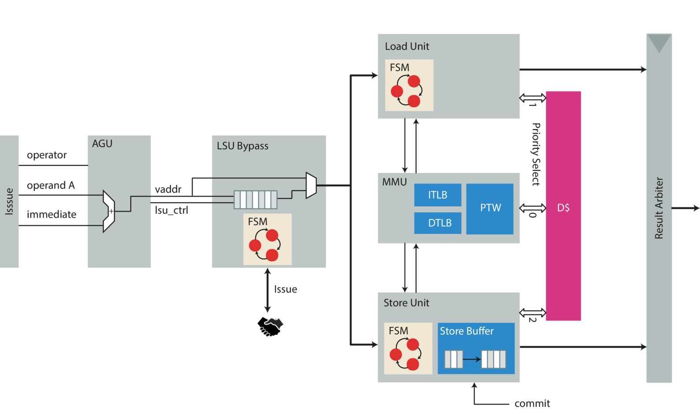
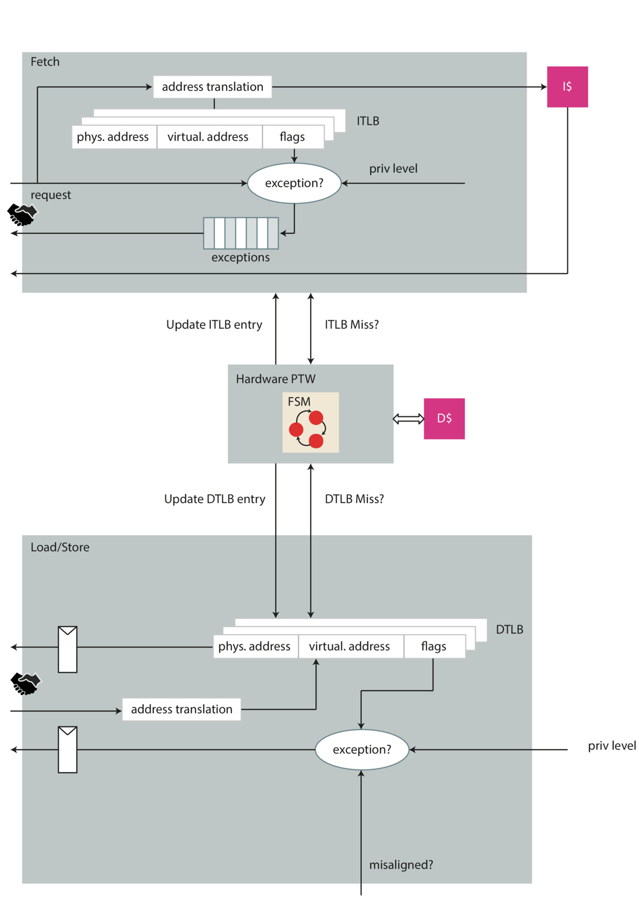

Execute Stage
The execute stage is a logical stage which encapsulates all the functional units (FUs). The FUs are not supposed to have inter-unit dependencies for the moment, e.g.: every FU must be able to perform its operation independently of every other unit. Each functional unit maintains a valid signal with which it will signal valid output data and a ready signal which tells the issue logic whether it is able to accept a new request or not. Furthermore, as briefly explained in the section about instruction issue (), they also receive a unique transaction ID. The functional unit is supposed to return this transaction ID together with the valid signal an the result. At the time of this writing the execute stage houses an ALU, a branch unit, a load store unit (LSU), a CSR buffer and a multiply/divide unit.
ALU
The arithmetic logic unit (ALU) is a small piece of hardware which performs 32 and 64-bit subtraction, addition, shifts and comparisons. It always completes its operation in a single cycle and therefore does not contain any state-full elements. Its ready signal is always asserted and it simply passes the transaction ID from its input to its output. Together with the two operands it also receives an operator which tells it which operation to perform.
Branch Unit
The branch unit’s purpose is to manage all kind of control flow changes
i.e.: conditional and unconditional jumps. It does so by providing an
adder to calculate the target address and some comparison logic to
decide whether to take the branch or not. Furthermore it also decides if
a branch was mis-predicted or not and reporting corrective actions to
the PC Gen stage. Corrective actions include updating the BHT and
setting the PC if necessary. As it can be that jumps are predicted on
any instruction (including instructions which are no jumps at all - see
aliasing problem in PC Gen section) it needs to know whenever an instruction gets
issued to a functional unit and monitor the branch prediction
information. If a branch was accidentally predicted on a non-branch
instruction it also takes corrective action and re-sets the PC to the
correct address (depending on whether the instruction was compressed or
not it adds PC + 2 or PC + 4).
As briefly mentioned in the section about instruction re-aligning the branch unit places the PC from an unaligned 32-bit instruction on the upper 16-bit (e.g.: on a new word boundary). Moreover if an instruction is compressed it also has an influence on the reported prediction as it needs to set a bit if the prediction occurred on the lower 16 bit (e.g.: the lower compressed instruction).
As can be seen this all adds a lot of costly operations to this stage, mostly comparison and additions. Therefore the branch unit is on the critical path of the overall design. Nevertheless, it was our design-choice to keep branches a single cycle operation. Still, it could be the case that in a future version it might make sense to split this path. This would bring some costly IPC implications to the overall design mainly because of the current restriction that the scoreboard is only admitting new instructions if there are no unresolved branches. With a single cycle operation all branches are resolved in the same cycle of issue which doesn’t introduce any pipeline stalls.
Load Store Unit (LSU)

The load store unit is similar to every other functional unit. In addition, it has to manage the interface to the data memory (D$). In particular, it houses the DTLB (Data Translation Lookaside Buffer), the hardware page table walker (PTW) and the memory management unit (MMU). It also arbitrates the access to data memory between loads, stores and the PTW - giving precedence to PTW lookups. This is done in order to resolve TLB misses as soon as possible. A high level block diagram of the LSU can be found in .
The LSU can issue load request immediately while stores need to be kept back as long as the scoreboard does not issue a commit signal: This is done because the whole processor is designed to only have a single commit point (see ). Because issuing loads to the memory hierarchy does not have any semantic side effects the LSU can issue them immediately, totally in contrast to the nature of a store. Stores alter the architectural state and are therefore placed in a store buffer only to be committed in a later step by the commit stage. Sometimes this is also called posted-store because the store request is posted to the store queue and waiting for entering the memory hierarchy as soon as the commit signal goes high and the memory interface is not in use.
Therefore, upon a load, the LSU also needs to check the store buffer for potential aliasing. Should it find uncommitted data it stalls, since it can’t satisfy the current request.
This means:
Two loads to the same address are allowed. They will return in issue order.
Two stores to the same address are allowed. They are issued in-order by the scoreboard and stored in-order in the store buffer as long as the scoreboard didn’t give the signal to commit them.
A store followed by a load to the same address can only be satisfied if the store has already been committed (marked as committed in the store buffer). Otherwise the LSU stalls until the scoreboard commits the instruction. We cannot guarantee that the store will eventually be committed (e.g.: an exception occurred).
For the moment being, the LSU does not handle misaligned accesses. In particular this means that access which are not aligned to a 64 bit boundary for double word accesses, access which are not aligned to a 32-bit boundary for word access and the accesses which are not aligned on 16-bit boundary for half word access. If encounters such a load or store it will throw a misaligned exception and lets the exception handler resolve the load or store. In addition to mis-aligned exceptions it can also throw page fault exceptions.
To ease the design of the LSU it is split in 6 major parts of which each is described in more detail in the upcoming paragraphs:
LSU Bypass
D$ Arbiter
Load Unit
Store Unit
MMU (including TLBs and PTW)
Non-blocking data cache
LSU Bypass {#par:lsu_bypass}
The LSU bypass module is an auxiliary module which manages the LSU status information (full flag etc.) which it presents to the issue stage. This is necessary for the following reason: The design of the LSU is critical in most aspects as it directly interfaces the relatively slow SRAMs. It additionally needs to do some costly operation in sequence. The most costly (in terms of timing) being address generation, address translation and checking the store buffer for potential aliasing. Therefore it is only known very late whether the current load/store can go to memory or if additional cycles are needed. From which aliasing on the store buffer and TLB miss are the most prominent ones. As the issue stage relies on the ready signal to dispatch new instructions this would result in an overly long path which would considerably slow down the whole design because of some corner cases.
To mitigate this problem a FIFO is added which can hold another request from issue stage. Therefore the ready flag of the functional units can be delayed by one cycle which eases timing. The LSU bypass model further decouples the functional unit from the issue stage. This is mostly necessary as the issue stage can’t stall as soon as it issued an instruction. In particular the LSU bypass is called that way because it is either bypassed or serves the load or store unit from its internal FIFO until they signal completion to the LSU bypass module.
Load Unit {#par:load_unit}
The load unit takes care of all loads. Loads are issued as soon as possible as they do not have any side effects. Before issuing a load the load unit needs to check the store buffer for stores which are not committed into the memory hierarchy yet in order to avoid loading stale data. As a full comparison is quite costly only the lower 12 bit (the page-offset where physical and virtual addresses are the same) are compared. This has two major advantages: the comparison is only 12-bit instead of 64-bit and therefore faster when done on the whole buffer and the physical address is not needed which implies that we don’t need to wait for address translation to finish. If the page offset matches with one of the outstanding stores the load unit simply stalls and waits until the store buffer is drained. As an improvement one could do some more elaborate data forwarding as the data in the store buffer is the most up-to-date. This is not done at the moment.
Furthermore the load unit needs to perform address translation. It makes use of virtually indexed and physically tagged D$ access scheme in order to reduce the number of cycles needed for load accesses. As it can happen that a load blocks the D$ it has to kill the current request on the memory interface to give way to the hardware PTW on the cache side. Some more advanced caching infrastructure (like a non-blocking cache) would alleviate this problem.
Store Unit {#par:store_unit}
The store unit manages all stores. It does so by calculating the target address and setting the appropriate byte enable bits. Furthermore it also performs address translation and communicates with the load unit to see if any load matches an outstanding store in one of its buffers. Most of the store units business logic resides in the store buffer which is described in detail in the next section.
Store Buffer {#par:store_buffer}
The store buffer keeps track of all stores. It actually consists of two
buffers: One is for already committed instructions and one is for
outstanding instructions which are still speculative. On a flush only
the instruction which are already committed are persisted while the
speculative queue is completely emptied. To prevent buffer overflows the
two queues maintain a full flag. The full flag of the speculative queue
directly goes to the store unit, which will stall the LSU bypass module
and therefore not receive any more requests. On the contrast the full
signal of the commit queue goes to the commit stage. Commit stage will
stall if it the commit queue can’t accept any new data items. On every
committed store the commit stage also asserts the lsu_commit signal
which will put the particular entry from the speculative queue into the
non-speculative (commit) queue.
As soon as a store is in the commit queue the queue will automatically try to commit the oldest store in the queue to memory as soon as the cache grants the request.
The store buffer only works with physical addresses. At the time when they are committed the translation is already correct. For stores in the speculative queue addresses are potentially not correct but this fact will resolve if address translation data structures are updated as those instructions will also automatically flush the whole speculative buffer.
Memory Management Unit (MMU) {#par:mmu}

The memory management unit (MMU) takes care of address translation (see ) and memory accesses in general. Address translation needs to be separately activated by writing the corresponding control and status register and switching to a lower privilege mode than machine mode. As soon as address translation is enabled it will also handle page faults. The MMU contains an ITLB, DTLB and hardware page table walker (HPTW). Although logically not really entangled - the fetch interface is also routed through the MMU. In general the fetch and data interface are handled differently. They only share the HPTW with each other (see .
There are mainly two fundamentally different paths through the MMU: one from the instruction fetch stage and the other from the LSU. Lets begin with the instruction fetch interface: The IF stage makes a request to get the memory content at a specific address. Instruction fetch will always ask for virtual addresses. Depending on whether the address translation is enabled the MMU will either transparently let the request directly go to the I$ or do address translation.
In case address translation is activated, the request to the instruction cache is delayed until a valid translation can be found. If no valid translation can be found the MMU will signal this with an exception. Furthermore, if an address translation can be performed with a hit on the ITLB it is a purely combinational path. The TLB is implemented as a fully set-associative caches made out of flops. This in turn means that the request path to memory is quite long and may become critical quite easily.
If an exception occurred the exception is returned to the instruction fetch stage together with the valid signal and not the grant signal. This has the implication that we need to support multiple out-standing transactions on the exception path as well (see ). The MMU has a dedicated buffer (FIFO) which stores those exceptions and returns them as soon as the answer is valid.
The MMUs interface on the data memory side (D$) is entirely different. It has a simple request-response interfaces guarded by handshaking signals. Either the load unit or the store unit will ask the MMU to perform address translation. However the address translation process is not combinatorial as it is the case for the fetch interface. An additional bank of registers delays the MMU’s answer (on a TLB hit) an additional cycle. As already mentioned in the previous paragraph address translation is a quite critical process in terms of timing. The particular problem on the data interface is the fact that the LSU needs to generate the address beforehand. Address generation involves another costly addition. Together with address translation this path definitely becomes critical. As the data cache is virtually indexed and physical tagged this additional cycle does not cost any loss in IPC. But, it makes the process of memory requests a little bit more complicated as we might need to abort memory accesses because of exceptions. If an exception occurred on a load request the load unit needs to kill the memory request it sent the cycle earlier. An excepting load (or store) will never go to memory.
Both TLBs are fully set-associative and configurable in size. Also the application specifier ID (ASID) can be changed in size. The ASID can prevent flushing of certain regions in the TLB (for example when switching applications). This is currently not implemented.
Page Table Walker (PTW)
The purpose of a page table walker has already been introduced in . The page table walker listens on both ITLB and DTLB for incoming translation requests. If it sees that either one of the requests is missing on the TLB it saves the virtual address and starts its page table walk. If the page table walker encounters any error state it will throw a page fault exception which in return is caught by the MMU and propagated to either the fetch interface or the LSU.
The page table walker gives precedence to DTLB misses. The page table walking process is described in more detail in the RISC-V Privileged Architecture.
PMA/PMP Checks
The core supports PMA and PMP checks in physical mode as well as with virtual memory enabled. PMA checks are performed only on the final access to the (translated) physical address. However, PMPs must be checked during the page table walk as well. During a page walk, all memory access must pass the PMP rules.
The amount of entries is parameterizable under the
CVA6Cfg.NrPMPEntries parameter. However, the core only supports
granularity 8 (G=8). This simplifies the implementation since we do
not have to worry about any unaligned accesses. There are a total of
three distinct PMP units in the design. They verify instruction
accesses, data loads and stores, and the page table walk respectively.
MMU Implementation Details
The MMU prioritizes instruction address translations to data address translations. The behavior of the MMU is described in the following:
As soon as a request from the instruction fetch stage arrives, the ITLB checked for a cached entry (combinatorial path). Upon a cache miss, the PTW is invoked.
The PTW will perform the page table walk in multiple cycles. During this walk, the PTW will update the content of the ITLB. The MMU checks every cycle if a cache hit in the ITLB exists, and therefore, the page table walk has concluded.
Multiplier
The multiplier contains a division and multiplication unit. Multiplication is performed in two cycles and is fully pipelined (re-timing needed). The division is a simple serial divider which needs 64 cycles in the worst case.
CSR Buffer
The CSR buffer is a functional unit which only purpose is to store the address of the CSR register the instruction is going to read/write. There are two reasons why we need to do this. The first reason is that a CSR instruction alters the architectural state, hence this instruction has to be buffered and can only be executed as soon as the commit stage decides to commit the instruction. The second reason is the way the scoreboard entry is structured: It has only one result field but for any CSR instruction we need to keep the data we want to write and the address of the CSR which this instruction is going to alter. In order to not clutter the scoreboard with some special case bit fields the CSR buffer comes into play. It simply holds the address and if the CSR instruction is going to execute it will use the stored address.
The clear disadvantage is that with the buffer being just one element we can’t execute more than one CSR instruction back to back without a pipeline stall. Since CSR instructions are quite rare this is not too much of a problem. Some CSR instructions will cause a pipeline flush anyway.